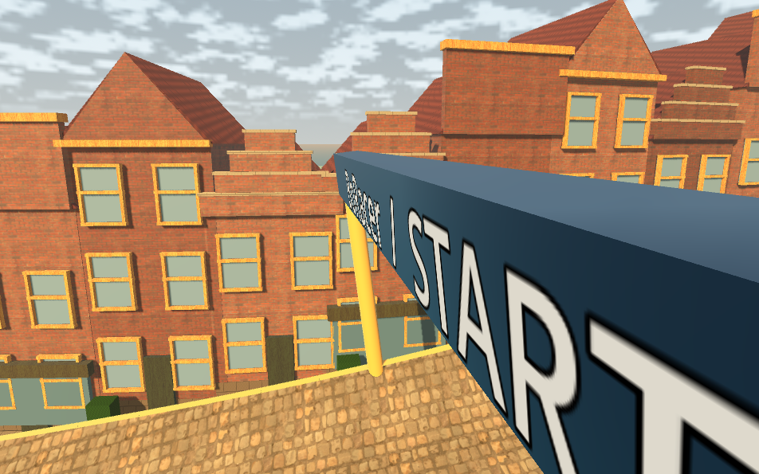
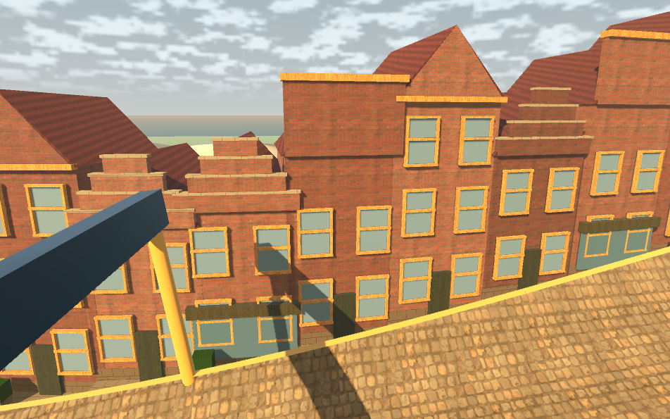
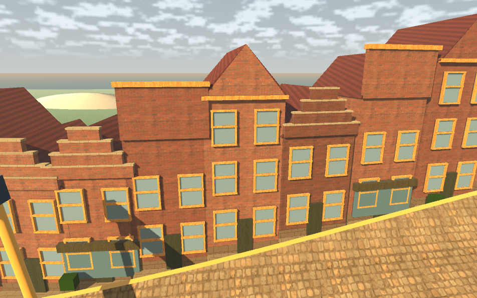
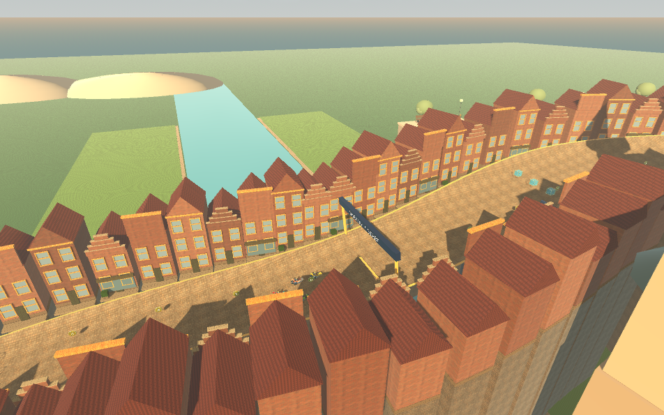


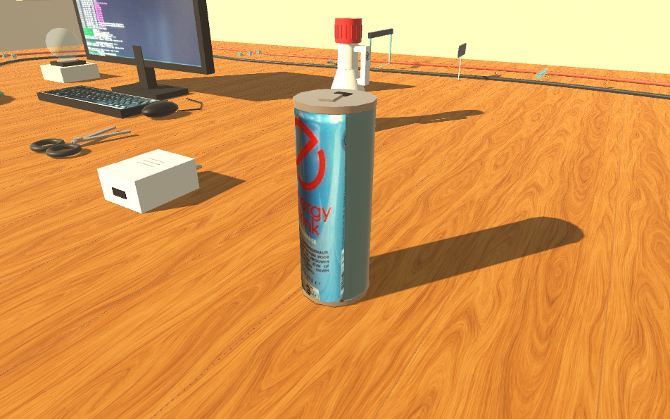
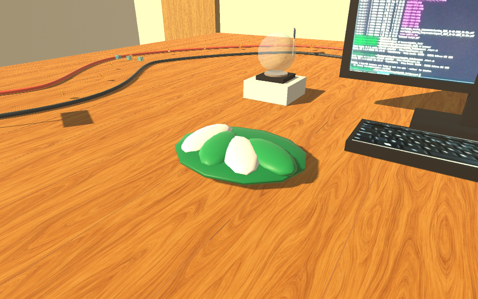
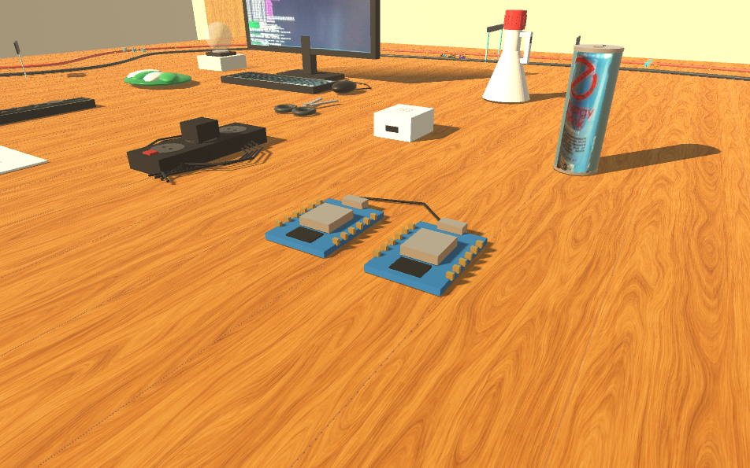

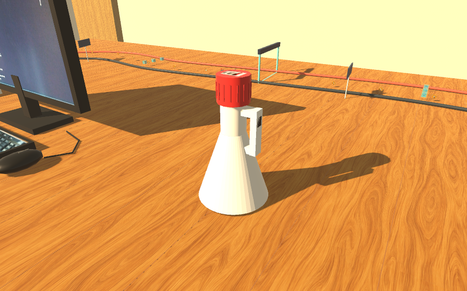
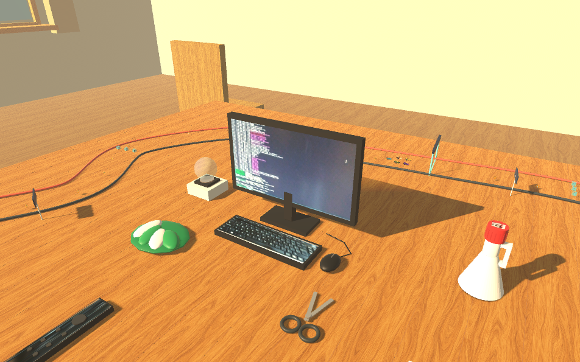
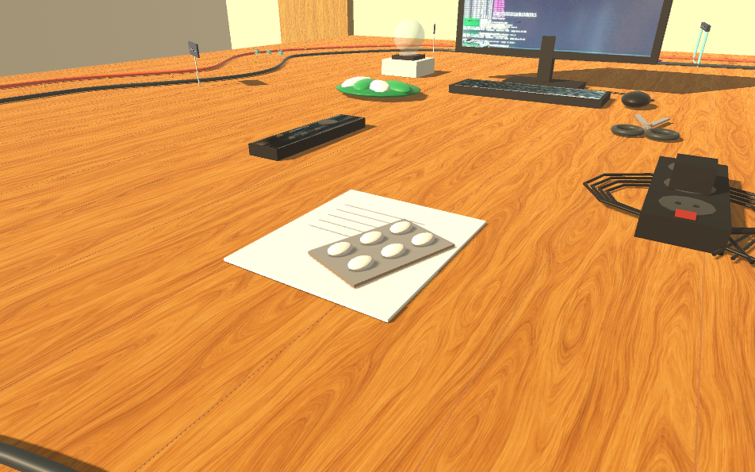


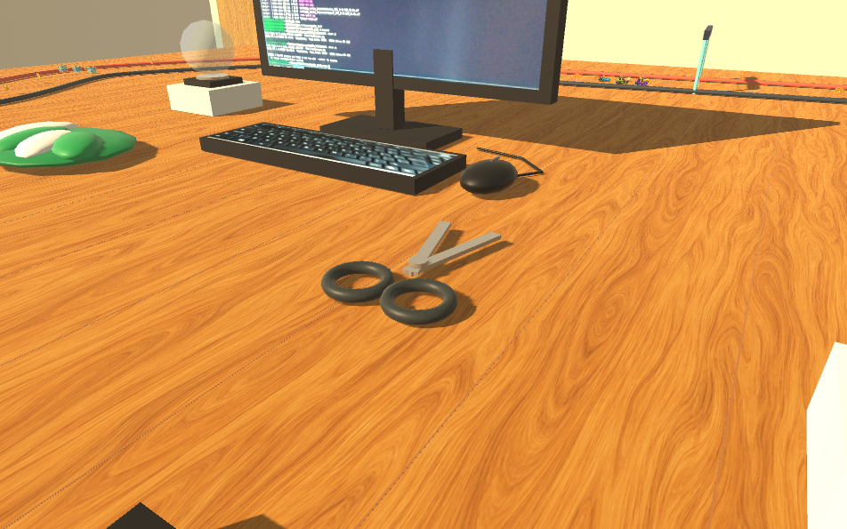

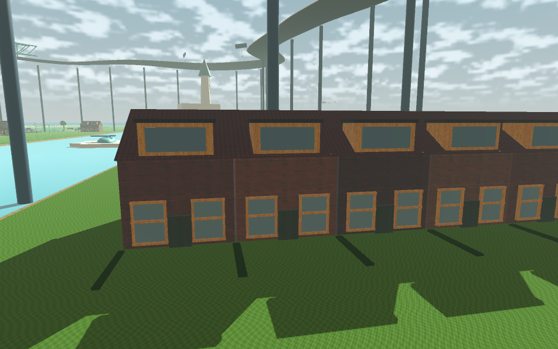


Voer dit commando uit in een terminal binnen een grafische desktopsessie. Het werkt vanuit iedere werkmap en bewaart nieuwe beelden in een aparte runmap.
Deze Godot-pagina opnieuw maken
python3 /home/anton/Documents/sites/boracart/game/tools/capture_step.py --project GAME-10001 --step stap-12-gebouwen-objectenTerug naar het renderoverzicht
Laatste geslaagde opname: 20261017T090425-471930Z · oorspronkelijke runpagina.
Native Godot · capture voltooid · metadata · log











